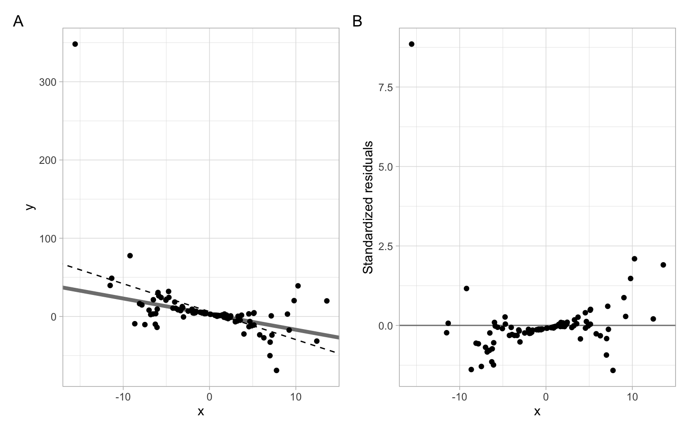
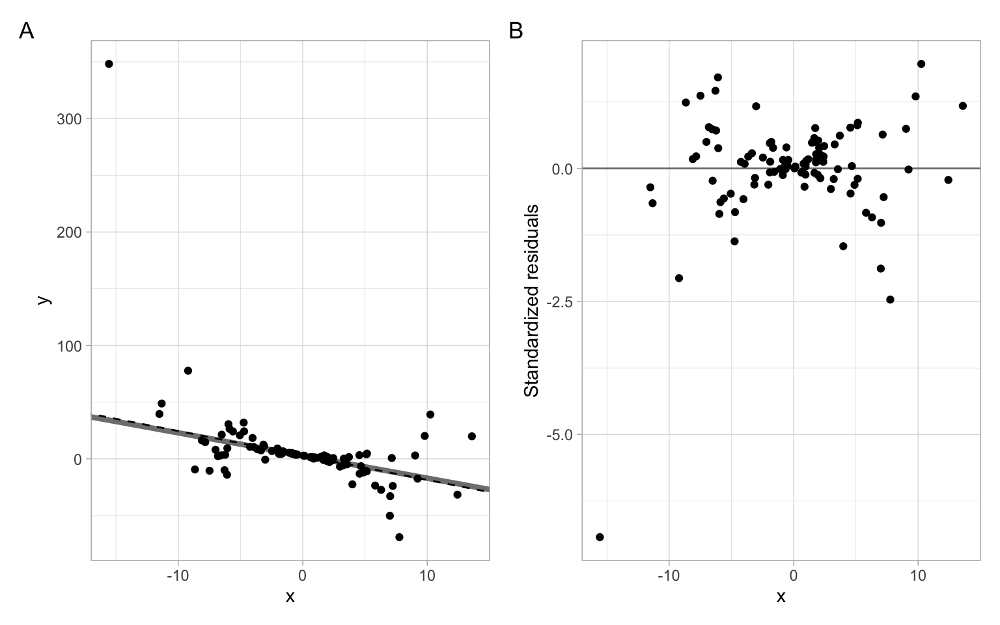
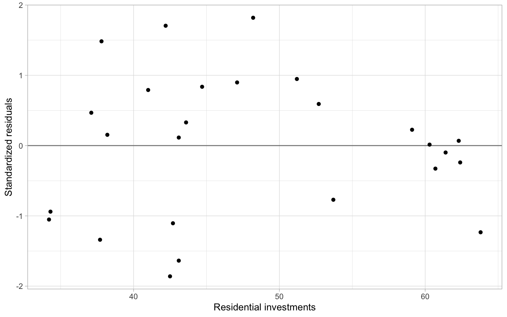
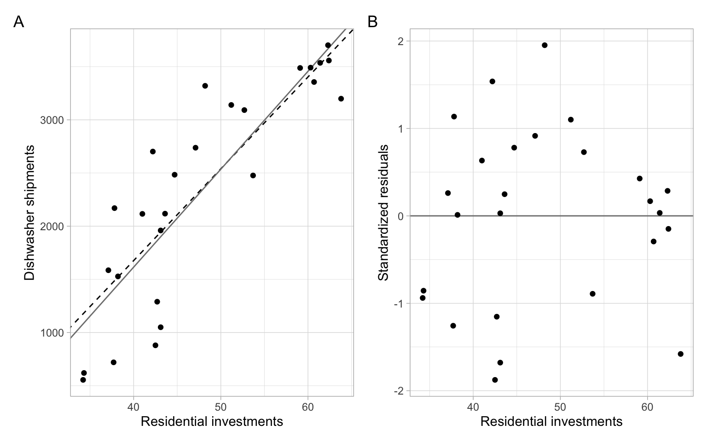

We can often hypothesize that the standard deviation of residuals in the model \[
y_i=\beta_0+\beta_1x_i+\varepsilon_i
\tag{A.1}\] is proportional to the predictor \(X\), so \[
\mathrm{var}(\varepsilon_i)=k^2x^2_i, \;\; k>0.
\]
In the weighted least squares (WLS) method, we can stabilize the variance by dividing both sides of Equation A.1 by \(x_i\): \[
\frac{y_i}{x_i}=\frac{\beta_0}{x_i}+\beta_1+\frac{\varepsilon_i}{x_i},
\tag{A.2}\] then \(\mathrm{var}\left(\frac{\varepsilon_i}{x_i}\right)=k^2\), i.e., it is now stabilized.
NoteExample: WLS applied ‘manually’
Consider a simulated example of a linear model \(y=3-2x\) with noise, which is a function of \(x\).
#>
#> Call:
#> lm(formula = y ~ x)
#>
#> Residuals:
#> Min 1Q Median 3Q Max
#> -47.41 -8.01 -2.32 1.58 286.47
#>
#> Coefficients:
#> Estimate Std. Error t value Pr(>|t|)
#> (Intercept) 6.131 3.402 1.80 0.075 .
#> x -3.571 0.639 -5.59 2e-07 ***
#> ---
#> Signif. codes: 0 '***' 0.001 '**' 0.01 '*' 0.05 '.' 0.1 ' ' 1
#>
#> Residual standard error: 34 on 98 degrees of freedom
#> Multiple R-squared: 0.242, Adjusted R-squared: 0.234
#> F-statistic: 31.3 on 1 and 98 DF, p-value: 2.04e-07
Based on Figure A.1, the OLS assumption of homoskedasticity is violated, because the observations deviate farther from the regression line at its ends (i.e., the variability of regression residuals is higher at the low and high values of the predictor).
Code
p1<-ggplot(data.frame(x, y), aes(x =x, y =y))+geom_abline(intercept =3, slope =-2, col ="gray50", lwd =1.5)+geom_abline(intercept =fit_ols$coefficients[1], slope =fit_ols$coefficients[2], lty =2)+geom_point()p2<-ggplot(data.frame(x, y), aes(x =x, y =rstandard(fit_ols)))+geom_hline(yintercept =0, col ="gray50")+geom_point()+xlab("x")+ylab("Standardized residuals")p1+p2+plot_annotation(tag_levels ='A')

Figure A.1: Simulated data example with heteroskedasticity. The gray line represents the underlying model; the dashed line is obtained from the OLS fit.
To stabilize the variance ‘manually,’ transform the variables according to Equation A.2 and refit the model:
#>
#> Call:
#> lm(formula = Y.t ~ X.t)
#>
#> Residuals:
#> Min 1Q Median 3Q Max
#> -20.021 -0.635 0.251 1.322 5.676
#>
#> Coefficients:
#> Estimate Std. Error t value Pr(>|t|)
#> (Intercept) -2.154 0.293 -7.36 5.7e-11 ***
#> X.t 3.008 0.168 17.95 < 2e-16 ***
#> ---
#> Signif. codes: 0 '***' 0.001 '**' 0.01 '*' 0.05 '.' 0.1 ' ' 1
#>
#> Residual standard error: 2.9 on 98 degrees of freedom
#> Multiple R-squared: 0.767, Adjusted R-squared: 0.764
#> F-statistic: 322 on 1 and 98 DF, p-value: <2e-16
Check Equation A.2 to see the correspondence of the coefficients, see the results in Figure A.2.
Code
p1<-ggplot(data.frame(x, y), aes(x =x, y =y))+geom_abline(intercept =3, slope =-2, col ="gray50", lwd =1.5)+geom_abline(intercept =fit_wls$coefficients[2], slope =fit_wls$coefficients[1], lty =2)+geom_point()p2<-ggplot(data.frame(x, y), aes(x =x, y =rstandard(fit_wls)))+geom_hline(yintercept =0, col ="gray50")+geom_point()+xlab("x")+ylab("Standardized residuals")p1+p2+plot_annotation(tag_levels ='A')

Figure A.2: Simulated data example with heteroskedasticity. The gray line represents the underlying model; the dashed line is obtained from the WLS fit.
Instead of minimizing the residual sum of squares (using the original or transformed data in Equation A.1 and Equation A.2), \[
RSS(\beta) = \sum_{i=1}^n(y_i - x_i\beta)^2,
\] we minimize the weighted sum of squares, where \(w_i\) are the weights: \[
WSS(\beta; w) = \sum_{i=1}^nw_i(y_i - x_i\beta)^2.
\] This includes OLS as the special case when all the weights \(w_i = 1\) (\(i=1,\dots,n\)). In the example above, \(w_i=1/x^2_i\).
In matrix form, \[
\hat{\boldsymbol{\beta}}=(\boldsymbol{X}^{\top}\boldsymbol{W}\boldsymbol{X})^{-1}\boldsymbol{X}^{\top}\boldsymbol{W}\boldsymbol{Y}.
\tag{A.3}\]
To apply Equation A.3 in R, specify the argument weights, and remember to take an inverse. Note that the coefficients are now labeled as expected.
#>
#> Call:
#> lm(formula = y ~ x, weights = 1/x^2)
#>
#> Weighted Residuals:
#> Min 1Q Median 3Q Max
#> -7.122 -0.842 0.018 1.238 20.021
#>
#> Coefficients:
#> Estimate Std. Error t value Pr(>|t|)
#> (Intercept) 3.008 0.168 17.95 < 2e-16 ***
#> x -2.154 0.293 -7.36 5.7e-11 ***
#> ---
#> Signif. codes: 0 '***' 0.001 '**' 0.01 '*' 0.05 '.' 0.1 ' ' 1
#>
#> Residual standard error: 2.9 on 98 degrees of freedom
#> Multiple R-squared: 0.356, Adjusted R-squared: 0.349
#> F-statistic: 54.2 on 1 and 98 DF, p-value: 5.72e-11
Chatterjee and Hadi (2006) in Chapter 7 consider two more cases for applying WLS, both related to grouping. We skip those cases for now and revisit our data example from Chapter 1.
NoteExample: Dishwasher shipments WLS model
First, use OLS to estimate the simple linear regression exploring dishwasher shipments (DISH) and private residential investments (RES) for several years.
D<-read.delim("data/dish.txt")%>%rename(Year =YEAR)modDish_ols<-lm(DISH~RES, data =D)
The plot in Figure A.3 indicates that the variance might be decreasing with higher investments.
Code
ggplot(D, aes(x =RES, y =rstandard(modDish_ols)))+geom_hline(yintercept =0, col ="gray50")+geom_point()+xlab("Residential investments")+ylab("Standardized residuals")

Figure A.3: OLS residuals vs. the predictor.
Apply the WLS:
modDish_wls<-lm(DISH~RES, data =D, weights =RES^2)
In Figure A.4 we see minor changes in the slope (better fit?).
Code
p1<-ggplot(D, aes(x =RES, y =DISH))+geom_abline(intercept =modDish_wls$coefficients[1], slope =modDish_wls$coefficients[2], lty =2)+geom_abline(intercept =modDish_ols$coefficients[1], slope =modDish_ols$coefficients[2], col ="gray50")+geom_point()+xlab("Residential investments")+ylab("Dishwasher shipments")p2<-ggplot(D, aes(x =RES, y =rstandard(modDish_wls)))+geom_hline(yintercept =0, col ="gray50")+geom_point()+xlab("Residential investments")+ylab("Standardized residuals")p1+p2+plot_annotation(tag_levels ='A')

Figure A.4: The regression fits (OLS – solid line; WLS – dashed line) and the WLS residuals vs. the predictor.
However, the residuals are still autocorrelated, which violates another assumption of the OLS and WLS methods:
#>
#> Runs Test - Two sided
#>
#> data: rstandard(modDish_wls)
#> Standardized Runs Statistic = -2, p-value = 0.05
See Appendix B on the method of generalized least squares (GLS) that allows accounting for autocorrelation in regression modeling.
Chatterjee S, Hadi AS (2006) Regression analysis by example, 4th edn. John Wiley & Sons, Hoboken, NJ, USA
Source Code
```{r, echo=FALSE}library(dplyr)library(ggplot2)library(patchwork)options(digits =3)theme_set(theme_light())```# Weighted least squares {#sec-wls}We can often hypothesize that the standard deviation of residuals in the model$$y_i=\beta_0+\beta_1x_i+\varepsilon_i$${#eq-mod1}is proportional to the predictor $X$, so$$\mathrm{var}(\varepsilon_i)=k^2x^2_i, \;\; k>0.$$In the *weighted least squares* (WLS) method, we can stabilize the variance by dividing both sides of @eq-mod1 by $x_i$:$$\frac{y_i}{x_i}=\frac{\beta_0}{x_i}+\beta_1+\frac{\varepsilon_i}{x_i},$${#eq-mod1W}then $\mathrm{var}\left(\frac{\varepsilon_i}{x_i}\right)=k^2$, i.e., it is now *stabilized*.::: {.callout-note icon=false}## Example: WLS applied 'manually'Consider a simulated example of a linear model $y=3-2x$ with noise, which is a function of $x$.```{r}set.seed(111)k =0.5n =100x <-rnorm(n, 0, 5)y <-3-2* x +rnorm(n, 0, k*x^2)```The coefficients estimated using ordinary least squares (OLS):```{r}#| code-fold: falsefit_ols <-lm(y ~ x)summary(fit_ols)```Based on @fig-wlsOLS, the OLS assumption of homoskedasticity is violated, because the observations deviate farther from the regression line at its ends (i.e., the variability of regression residuals is higher at the low and high values of the predictor).```{r}#| label: fig-wlsOLS#| fig-cap: "Simulated data example with heteroskedasticity. The gray line represents the underlying model; the dashed line is obtained from the OLS fit."p1 <-ggplot(data.frame(x, y), aes(x = x, y = y)) +geom_abline(intercept =3, slope =-2, col ="gray50", lwd =1.5) +geom_abline(intercept = fit_ols$coefficients[1], slope = fit_ols$coefficients[2], lty =2) +geom_point()p2 <-ggplot(data.frame(x, y), aes(x = x, y =rstandard(fit_ols))) +geom_hline(yintercept =0, col ="gray50") +geom_point() +xlab("x") +ylab("Standardized residuals")p1 + p2 +plot_annotation(tag_levels ='A')```To stabilize the variance 'manually,' transform the variables according to @eq-mod1W and refit the model:```{r}#| code-fold: falseY.t <- y/xX.t <-1/xfit_wls <-lm(Y.t ~ X.t)summary(fit_wls)```Check @eq-mod1W to see the correspondence of the coefficients, see the results in @fig-wls.```{r}#| label: fig-wls#| fig-cap: "Simulated data example with heteroskedasticity. The gray line represents the underlying model; the dashed line is obtained from the WLS fit."p1 <-ggplot(data.frame(x, y), aes(x = x, y = y)) +geom_abline(intercept =3, slope =-2, col ="gray50", lwd =1.5) +geom_abline(intercept = fit_wls$coefficients[2], slope = fit_wls$coefficients[1], lty =2) +geom_point()p2 <-ggplot(data.frame(x, y), aes(x = x, y =rstandard(fit_wls))) +geom_hline(yintercept =0, col ="gray50") +geom_point() +xlab("x") +ylab("Standardized residuals")p1 + p2 +plot_annotation(tag_levels ='A')```:::Instead of minimizing the residual sum of squares (using the original or transformed data in @eq-mod1 and @eq-mod1W),$$RSS(\beta) = \sum_{i=1}^n(y_i - x_i\beta)^2,$$we minimize the *weighted sum of squares*, where $w_i$ are the weights:$$WSS(\beta; w) = \sum_{i=1}^nw_i(y_i - x_i\beta)^2.$$This includes OLS as the special case when all the weights $w_i = 1$ ($i=1,\dots,n$). In the example above, $w_i=1/x^2_i$.In matrix form,$$\hat{\boldsymbol{\beta}}=(\boldsymbol{X}^{\top}\boldsymbol{W}\boldsymbol{X})^{-1}\boldsymbol{X}^{\top}\boldsymbol{W}\boldsymbol{Y}.$${#eq-wls}To apply @eq-wls in R, specify the argument `weights`, and remember to take an inverse. Note that the coefficients are now labeled as expected.```{r}#| code-fold: falsefit_wls2 <-lm(y ~ x, weights =1/x^2)summary(fit_wls2)```@Chatterjee:Hadi:2006 in Chapter 7 consider two more cases for applying WLS, both related to grouping. We skip those cases for now and revisit our data example from @sec-regression.::: {.callout-note icon=false}## Example: Dishwasher shipments WLS modelFirst, use OLS to estimate the simple linear regression exploring dishwasher shipments (DISH) and private residential investments (RES) for several years.```{r}#| code-fold: falseD <-read.delim("data/dish.txt") %>%rename(Year = YEAR)modDish_ols <-lm(DISH ~ RES, data = D)```The plot in @fig-dishOLS indicates that the variance might be decreasing with higher investments.```{r}#| label: fig-dishOLS#| fig-cap: "OLS residuals vs. the predictor."ggplot(D, aes(x = RES, y =rstandard(modDish_ols))) +geom_hline(yintercept =0, col ="gray50") +geom_point() +xlab("Residential investments") +ylab("Standardized residuals")```Apply the WLS:```{r}#| code-fold: falsemodDish_wls <-lm(DISH ~ RES, data = D, weights = RES^2)```In @fig-dishWLS we see minor changes in the slope (better fit?).```{r}#| label: fig-dishWLS#| fig-cap: "The regression fits (OLS -- solid line; WLS -- dashed line) and the WLS residuals vs. the predictor."p1 <-ggplot(D, aes(x = RES, y = DISH)) +geom_abline(intercept = modDish_wls$coefficients[1], slope = modDish_wls$coefficients[2], lty =2) +geom_abline(intercept = modDish_ols$coefficients[1], slope = modDish_ols$coefficients[2], col ="gray50") +geom_point() +xlab("Residential investments") +ylab("Dishwasher shipments")p2 <-ggplot(D, aes(x = RES, y =rstandard(modDish_wls))) +geom_hline(yintercept =0, col ="gray50") +geom_point() +xlab("Residential investments") +ylab("Standardized residuals")p1 + p2 +plot_annotation(tag_levels ='A')```However, the residuals are still autocorrelated, which violates another assumption of the OLS and WLS methods:```{r}#| code-fold: falselawstat::runs.test(rstandard(modDish_wls))```:::See @sec-gls on the method of generalized least squares (GLS) that allows accounting for autocorrelation in regression modeling.